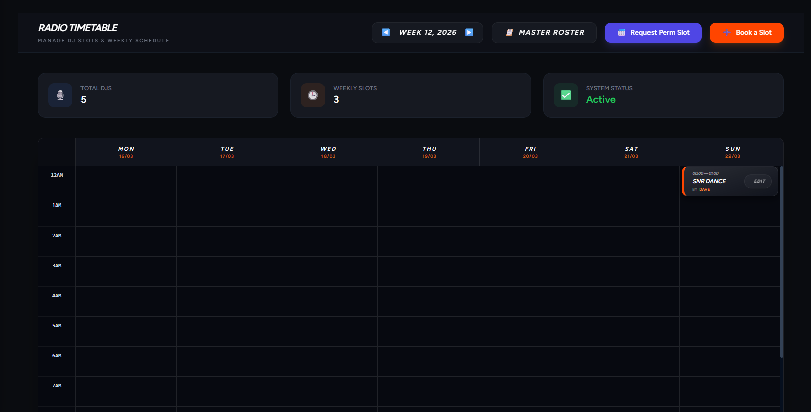

The panel
Scheduling a station that never goes off air is a coordination problem before it's a software problem. Presenters needed to see the whole week at once, claim a slot without stepping on someone else's, and have that booking end up in the thing that actually plays the music.
So the panel was built around one view: a full seven-day timetable, dense enough to hold a week but spaced so a slot could carry a show title, a presenter and a time without becoming unreadable. Around it sat the rest of running a station. Presenter accounts, recruitment and applications, listener requests, banned IPs, and a bug inbox so staff could report a problem without finding me first.

The timetable grid
Where most of the work went
The grid paginated by week and year, which meant every cell had to know its real calendar date, including the weeks that straddle a year boundary. I wrote the date logic myself rather than pulling in a library, so the pagination and the dates couldn't disagree with each other.
Times mapped to the grid mathematically: a 24-hour time string converted to an exact Y coordinate on a fixed vertical scale, so a show starting at 14:20 landed where 14:20 actually is.

Handling staff data
Nothing injected
Show titles and presenter names are user input that ends up rendered on a page and sent to an API. Both paths were sanitised, and requests carried CSRF protection, so a booking form couldn't be turned into a way in.
No identifiers in the page
Staff records were hydrated so internal staff IDs never appeared in the rendered source or the DOM. The browser got what it needed to draw the schedule and nothing behind it.
Access, not trust
The panel was staff-only and treated as such: authenticated access control on the routes, rather than an unlisted URL and an assumption nobody would find it.
Other details
One layout, many screens
Type was set with clamp() rather than breakpoints, so the
same timetable worked on a presenter's laptop and on the wide monitor
in the studio. Denser on the big screen instead of just larger.
One directory, two apps
The staff panel and the public site lived in the same project, sharing assets and a single deployment. One push updated both, so there was never a version of the schedule component that only existed on one side.
Available for work
Projects end. The work still counts.
SimNation is closed, but scheduling, dashboards and API integrations are still what I do. If you have one that needs building or rescuing, get in touch.